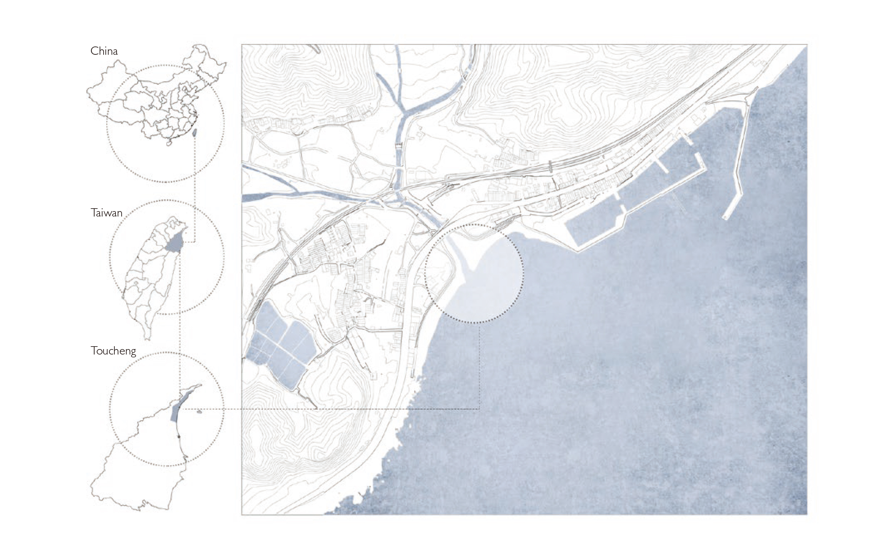
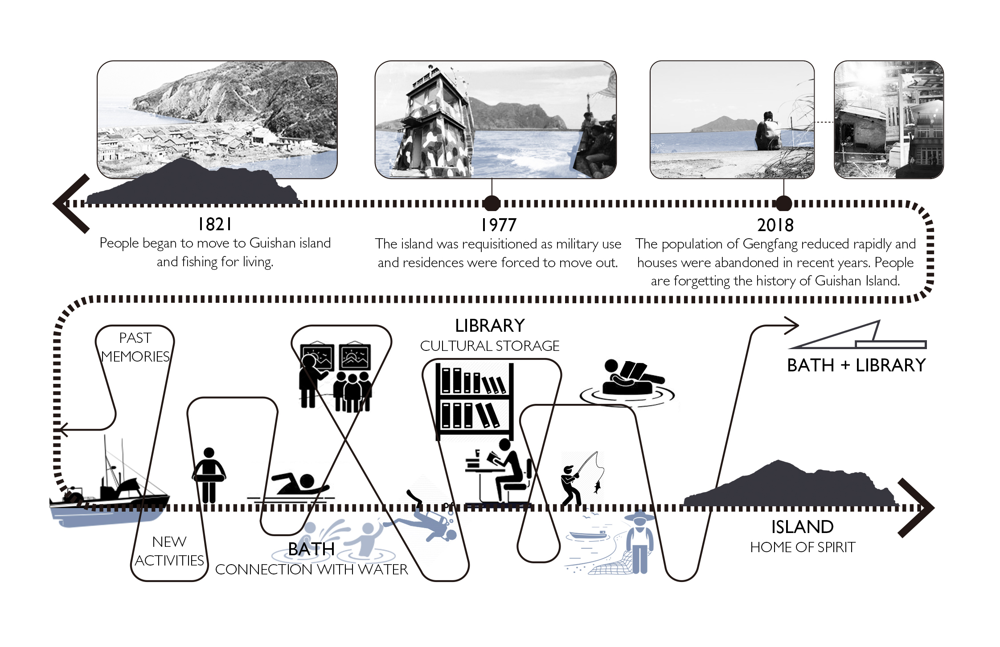
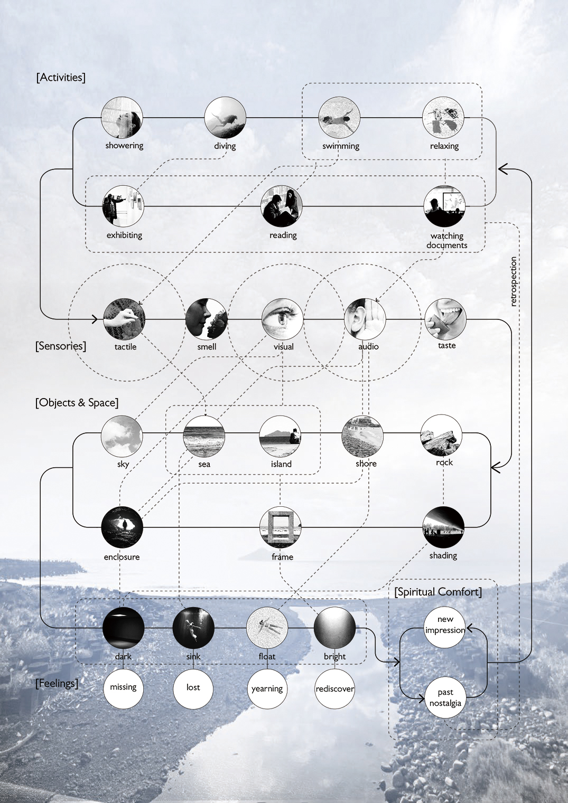
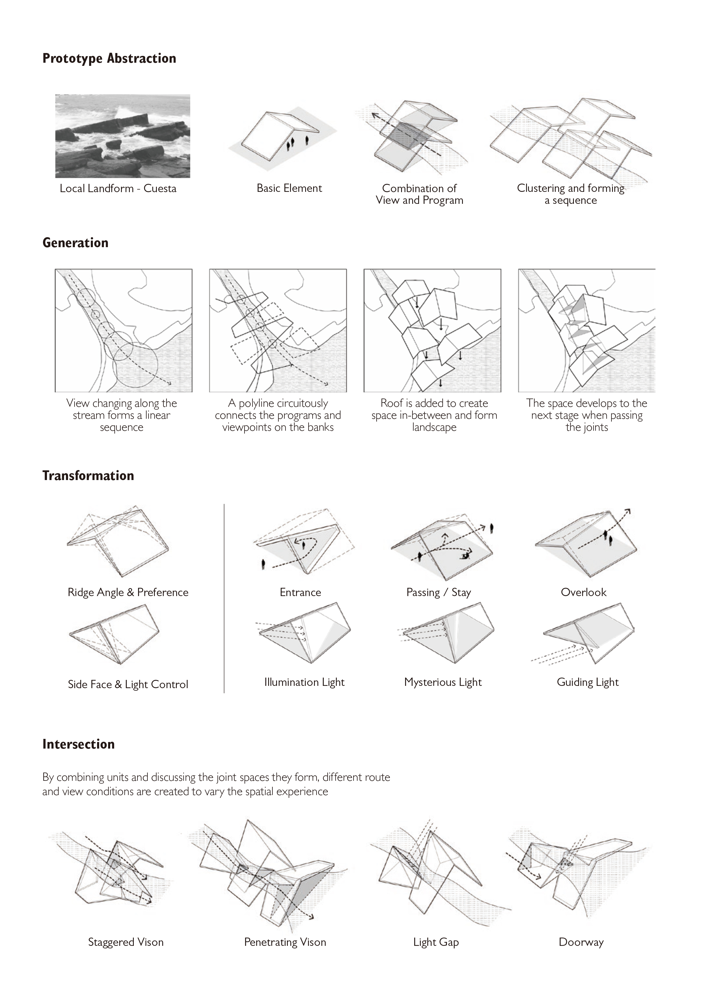
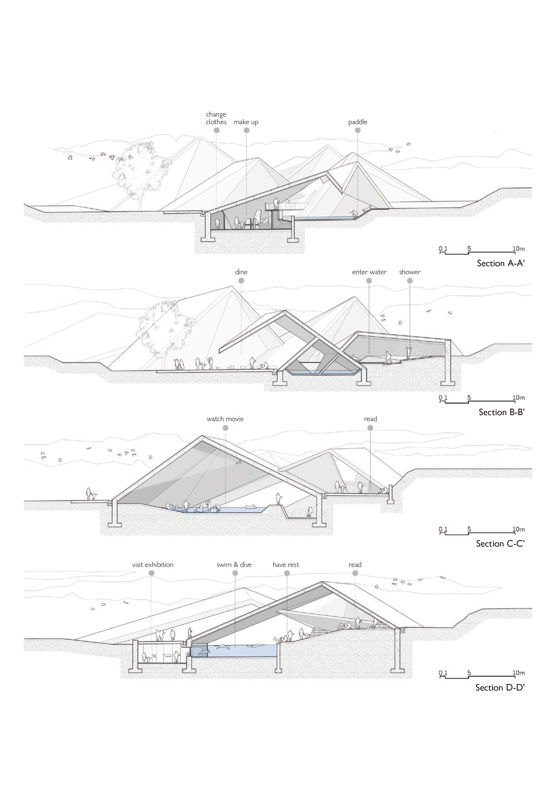
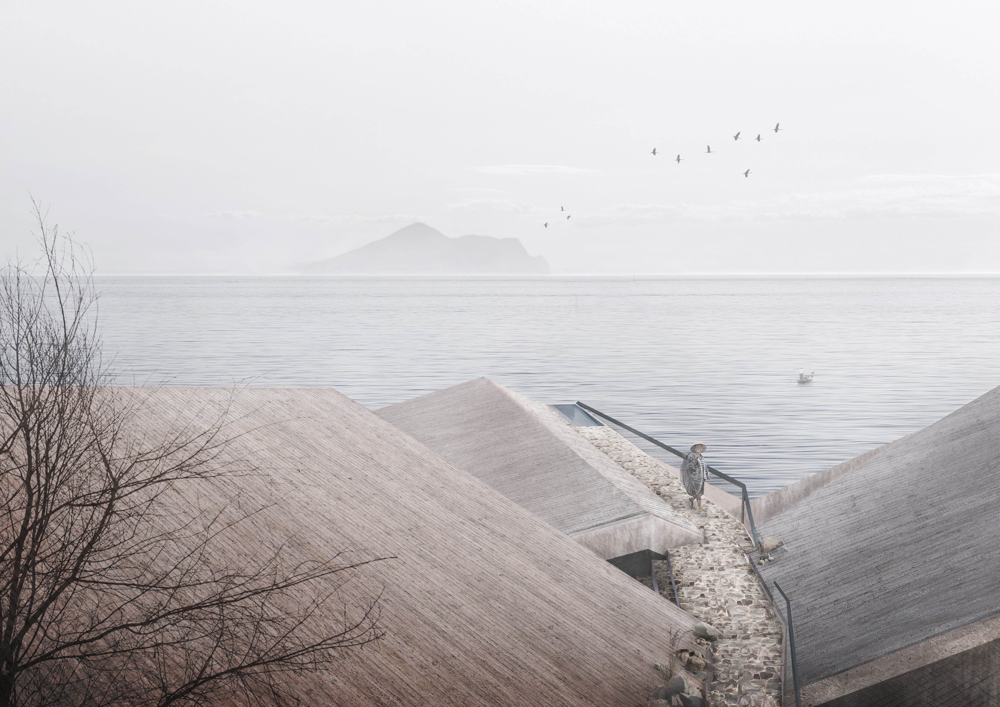

[Group Work] with Yufei Chen
[Tutor] Da Cheng & Can Ge
[Location] Gengfang Village, Taiwan, China
[Time] September, 2019

Keywords: nostalgia, muti-sensory experience, space sequences
[Group Work] with Yufei Chen
[Tutor] Da Cheng & Can Ge
[Location] Gengfang Village, Taiwan, China
[Time] September, 2019
+Description
In the 70s of last century, a miserable removal happened on the eastern sea of Taiwan. Due to the force majeure of some military issues, all the people on Guishan(龜山) Island moved to the continent and started their new life. As the nearest town on the coast line, Genfang(梗枋) villiage accommodated most of the immigrants. Time goes on and Guishan Island becomes a popular tourist attraction, whereas its history and belongingness are fading from people's mind on the other side.
We hope to build a nostalgic bath at the estuary of Gengfang stream, which mixes the function of bath and library through water. In this architecture, all the activities are connected with water, such as reading , watching video and visting exhibition. These recording materials could arouse people’s memory physically, while the intangible water refreshes the past spiritually. In addtion, several ways of perception are evoked to construct the nostalgia, such as the vision towards island, different tactus with water and the sound of waves. Once people drench in the whole atmosphere , their nostalgia would gradually streams to the sea, to the island, wave by wave.
+Site Location

The site is located at an estuary in Gengfang, Taiwan. It is the spot where Gengfang stream flows into the sea, facing the direction of Guishan island, the village where the local people used to live.
+History & Concept

Original residents on Guishan Island were forced to move to the nearby villages on the main island due to the requistion of military use in 1977. The population of Gengfang reduced rapidly and the local houses were abandoned in recent years. The history of Guishan Island is being washed away.
Water is an essentail element of the ambience and the local people's lives, so we want to take water as the medium of our design to connect people and their lost memory. All the activities in our bath are performed with water, sucha as reading, watching films and discovering exhibitions.
+Muti-sensory Experience

In order to arouse people's memory of the past, our spaces are designed to engage as many senses as possible, such as the shift of views, the touch of water, the smell and tast of sea and the reverberant sound of waves. The immersive experience brings back people's nostalgia of the old fishing life and their strong connection to the sea.
+Space and Prototype




+Main Sequence

The sequence of spaces develops along the stream. With a main visual guidance towards Guishan Island on the axis, rooms of different functions go zigzag on the river bank, gradually recalling people’s nostalgia through the perception of tactility, light and sound.
All the activities are connected with water, an intermediary of sea memory, and people can unfetteredly explore their nostalgia in the architecture. Finally, the sequence ends with a wide bath opened to Guishan Island, which extends people’s thoughts to the place they come from.
+Nostalgia

Time flows like water,
drifting our memories away.
We enshrine the island in distance,
to remember the place we born.
Dimly, old chanteys echo in the fog,
scrabbling up the pieces of our past.
Tide lands,
we start a voyage,
sailing to our spiritual home.